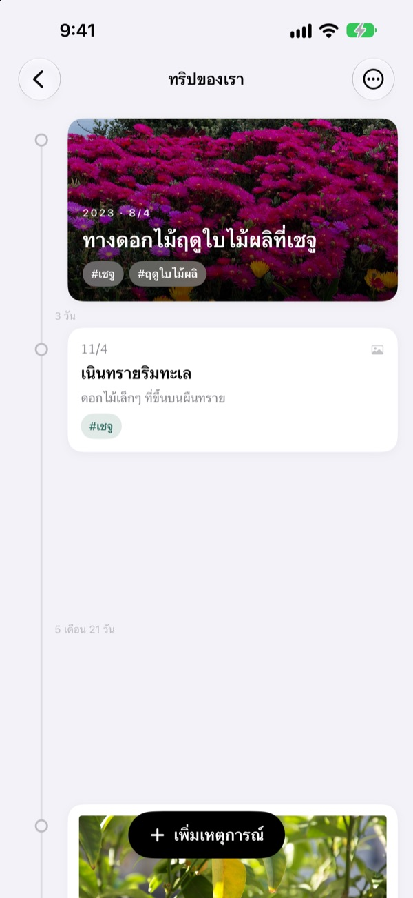
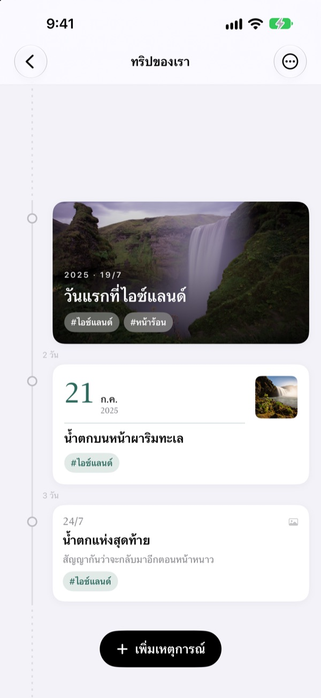
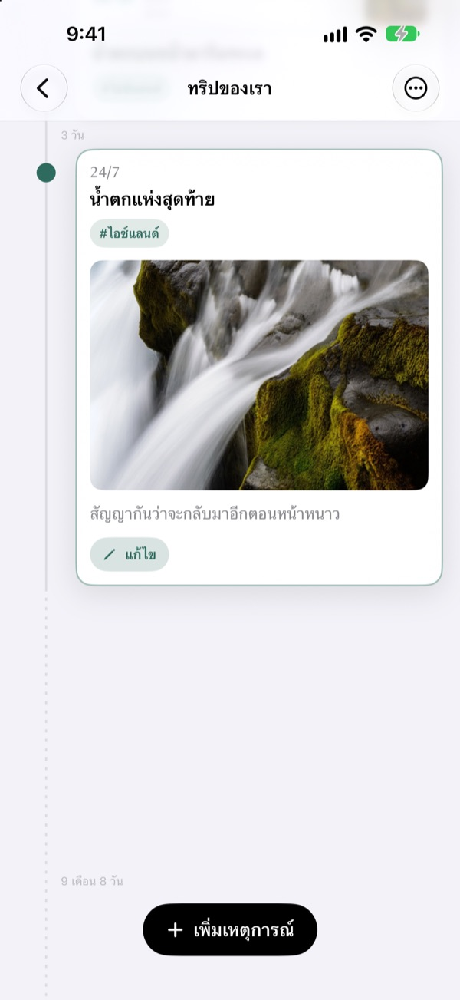
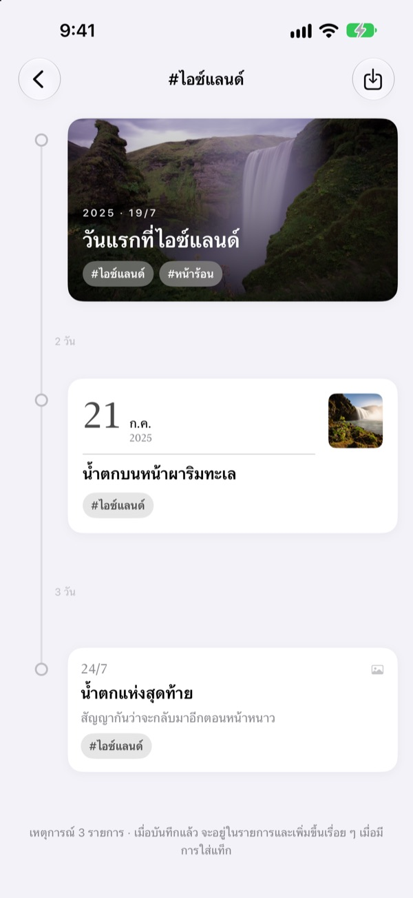
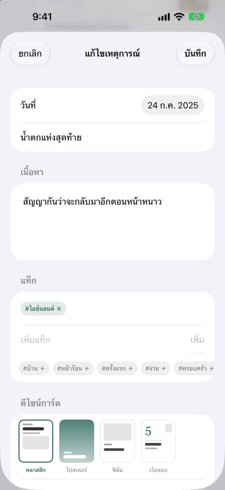

เวลาผ่านไปเท่าไร
ระยะห่างก็เท่านั้น
3 วันกับ 5 วันจะห่างกัน 3 ต่อ 5 ช่วงที่ว่างนานอย่าง 2 ปี 4 เดือนจะพับเป็นเส้นประ แค่ดูระยะห่างก็รู้ว่าช่วงนั้นเวลาผ่านไปแบบไหน
ใช้ได้ทุกฟีเจอร์ฟรี บน iPhone และ iPad

ลองยืดระยะห่างด้วยตัวเอง
กดปุ่มแล้วจะมีเหตุการณ์ใหม่ต่อท้ายเหตุการณ์ล่าสุด ระยะห่างคิดด้วยกฎเดียวกับในแอป
เลื่อนดูคลังรูปแค่ไหนก็ไม่เห็นเวลา
คลังรูปเรียงทุกอย่างตามวันที่ แต่ห่างกัน 3 วันหรือ 2 ปีก็กินที่แค่ช่องเดียวเท่ากัน Yeoul เว้นระยะเหตุการณ์ตามเวลาที่ผ่านไประหว่างกัน เห็นได้ทันทีว่าช่วงไหนแน่นและช่วงไหนว่าง
ระยะห่างก็คือเวลา
ทั้งไทม์ไลน์ใช้สเกลเดียว ช่วงเวลาเท่ากันจึงยาวเท่ากันไม่ว่าจะอยู่ตรงไหนของหน้าจอ ทุกช่วงมีระยะเวลาจริงกำกับไว้ เช่น 3 วัน หรือ 5 เดือน 21 วัน
เหตุการณ์ที่ใกล้กันมากจะยังมีที่เว้นไว้เล็กน้อย ส่วนช่วงที่ว่างนานมากจะพับเป็นเส้นประ

หารูปที่ถ่ายในวันนั้นให้
เลือกวันที่ของเหตุการณ์แล้วแตะ ค้นหารูปที่เกี่ยวข้อง จะเห็นรูปที่ถ่ายในวันนั้น ถ้าไม่มีรูปที่ชอบ แตะ ค้นหาเอง แล้วเลือกได้เลย
แตะเหตุการณ์บนไทม์ไลน์ รูปและเรื่องราวจะเปิดออกตรงนั้น

แท็กเดียวรวมช่วงเวลาที่กระจัดกระจาย
ติดแท็กอย่าง #ไอซ์แลนด์ ให้เหตุการณ์ แล้วแตะแท็ก เหตุการณ์ทุกอันที่มีแท็กนี้จากทุกไทม์ไลน์จะมารวมกันเป็นไทม์ไลน์ใหม่
บันทึกไว้ก็จะอยู่ในรายการ และเหตุการณ์ที่ติดแท็กเดียวกันทีหลังจะเข้ามาเองอัตโนมัติ

เลือกการ์ดให้เข้ากับแต่ละเหตุการณ์
คลาสสิกเน้นตัวหนังสือ โปสเตอร์ให้รูปเต็มการ์ด ฟิล์มใส่ขอบเหมือนรูปอัด เว้นขอบให้วันที่ตัวใหญ่เป็นพระเอก เลือกปุ๊บตัวอย่างก็เปลี่ยนปั๊บ

เริ่มได้ใน 3 ขั้นตอน
- 1
สร้างไทม์ไลน์
ขวบปีแรกของลูก ความรัก การเดินทาง ตั้งชื่อและเลือกสีให้แต่ละเรื่อง
- 2
เพิ่มเหตุการณ์
ใส่วันที่และชื่อ แล้วแนบรูปของวันนั้น
- 3
ติดแท็ก
เหตุการณ์ที่มีแท็กเดียวกันจะมารวมกัน แม้อยู่คนละไทม์ไลน์
ดีไซน์การ์ด 4 แบบ
- คลาสสิก
- เน้นตัวหนังสือ รูปอยู่ด้านล่าง
- โปสเตอร์
- รูปเต็มการ์ด มีชื่อตัวใหญ่วางทับ ถ้าไม่มีรูปจะใช้สีของไทม์ไลน์แทน
- ฟิล์ม
- รูปมีขอบแบบรูปอัด พร้อมตัวอักษรพิมพ์ดีดและตราประทับวันที่
- เว้นขอบ
- ตัวเลขวันที่ใหญ่ รูปเล็ก ให้ตัวหนังสือเป็นพระเอก
เหตุการณ์ใหม่จะเริ่มด้วยดีไซน์เดียวกับการ์ดล่าสุดในไทม์ไลน์นั้น
ใช้ได้ทุกฟีเจอร์ฟรี
ฟรี
- สร้างไทม์ไลน์ได้ไม่จำกัด ตั้งชื่อและเลือกสีได้
- ใส่รูป เรื่องราว และแท็กให้ทุกเหตุการณ์
- หารูปที่ถ่ายในวันของเหตุการณ์
- บันทึกไทม์ไลน์แท็ก
- ดีไซน์การ์ด 4 แบบ
- ซิงค์ iPhone กับ iPad ผ่าน iCloud
- บันทึกผ่านคำสั่งลัดและ Siri
สนับสนุนนักพัฒนา
- เลือกให้ทิปได้ 3 ขนาด เล็ก กลาง ใหญ่
- ไม่ได้ปลดล็อกฟีเจอร์ใด เป็นแค่การบอกขอบคุณ
อยู่ในหน้าตั้งค่าของแอป ให้เมื่อไรก็ได้ที่อยากให้
ไม่มีโฆษณา ไม่มีการสมัครสมาชิก
คำถามที่พบบ่อย
ทำไมระยะห่างระหว่างเหตุการณ์ไม่เท่ากัน
Yeoul เว้นระยะตามเวลาที่ผ่านไปจริง ทุกช่วงใช้สเกลเดียวกัน 3 วันกับ 5 วันจึงห่างกัน 3 ต่อ 5 เหตุการณ์ที่ใกล้กันมากจะมีระยะขั้นต่ำเพื่อไม่ให้ทับกัน ส่วนช่วงที่ว่างนานมากจะพับเป็นเส้นประพร้อมบอกระยะเวลาจริง เช่น 2 ปี 4 เดือน
ไม่เห็นรูปที่ถ่ายในวันนั้น
การหารูปตามวันที่ต้องได้รับอนุญาตให้เข้าถึงรูปภาพ เปิดได้ที่ การตั้งค่า > Yeoul > รูปภาพ แอปจะหารูปที่ถ่ายตั้งแต่เที่ยงคืนถึงเที่ยงคืนของวันนั้นตามเขตเวลาของเครื่อง ถ้าไม่อยากให้สิทธิ์ แตะ ค้นหาเอง ด้านล่างเพื่อเลือกจากคลังรูปได้
ไทม์ไลน์แท็กคืออะไร
แตะแท็กของเหตุการณ์ Yeoul จะรวมเหตุการณ์ที่มีแท็กนั้นจากทุกไทม์ไลน์มาไว้ในไทม์ไลน์เดียว อันที่ดูบ่อยบันทึกไว้ในรายการได้ ไม่มีการคัดลอกเหตุการณ์ แก้เหตุการณ์ต้นฉบับแล้วตรงนี้ก็เปลี่ยนตาม และลบไทม์ไลน์แท็กไปเหตุการณ์ก็ยังอยู่
ทำไมเพิ่มเหตุการณ์ในไทม์ไลน์แท็กไม่ได้
ไทม์ไลน์แท็กเป็นมุมมองที่รวบรวมตามแท็ก ไม่ใช่ที่เก็บเหตุการณ์ จึงบอกไม่ได้ว่าเหตุการณ์ใหม่ควรอยู่ในไทม์ไลน์ไหน ให้เพิ่มในไทม์ไลน์ของมันแล้วติดแท็ก เหตุการณ์จะมาปรากฏที่นี่เอง
บันทึกโดยไม่เปิดแอปได้ไหม
ได้ ใช้ บันทึกเหตุการณ์ ในแอปคำสั่งลัดหรือกับ Siri แค่เลือกไทม์ไลน์และชื่อ ถ้าไม่ระบุวันที่จะบันทึกเป็นเวลาปัจจุบัน
ดูบนอุปกรณ์อื่นได้ไหม
ได้ บน iPhone และ iPad ที่ลงชื่อเข้า iCloud ด้วยบัญชี Apple เดียวกันจะซิงค์ให้อัตโนมัติ ตรวจดูที่ การตั้งค่า > ชื่อของคุณ > iCloud ว่าเปิด iCloud อยู่ ขึ้นกับเครือข่าย อาจใช้เวลาสักครู่
อยากลบบันทึก
ปัดไทม์ไลน์ไปทางซ้ายในรายการ หรือแตะแก้ไข ลบไทม์ไลน์แล้วเหตุการณ์ข้างในจะถูกลบด้วย ข้อมูลที่ยังเหลือใน iCloud ลบได้จากการจัดการพื้นที่จัดเก็บในการตั้งค่า iCloud
บันทึกของฉันถูกส่งให้นักพัฒนาไหม
ไม่ บันทึกและรูปเก็บไว้แค่ในเครื่องและ iCloud ของคุณเอง นักพัฒนามองไม่เห็น ดูรายละเอียดได้ในนโยบายความเป็นส่วนตัวด้านล่าง
อยากแจ้งปัญหาหรือเสนอฟีเจอร์
ส่งได้จากหน้าตั้งค่าในแอป หรือทางอีเมลและ Instagram @lee25_ios บอกรุ่นเครื่อง เวอร์ชัน iOS และสิ่งที่เกิดขึ้นมาด้วย จะช่วยได้เร็วขึ้น
มีคำถามหรือข้อเสนอแนะ ส่งมาที่ leeo@kakao.com